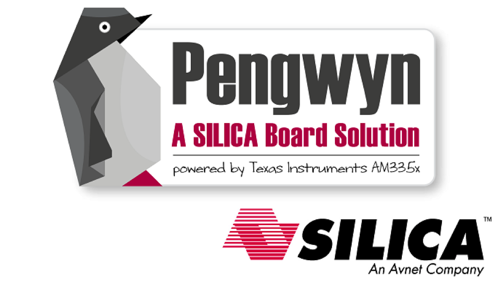

Table Of Contents
- Installing the Virtual Machine
- How to use Poky
- How to customize u-boot
- How to customize the Linux Kernel
- How to create the SD card
- How to write the NAND memory
- How to use HOB
- How to configure Minicom
- How to write a software application for the Pengwyn board
- Qt SDK
- Hardware
- Opkg Basics
- How to add 3”5 display with touch screen
Welcome to Pengwyn SDK’s documentation!¶
If you are a new user of the Yocto based SDK we suggest you to read the Quick start guide chapter, otherwise, if you want to have a better understanding of specific topics, just jump directly to the chapter that interests you the most.
Furthermore, we encourage you to read the official Yocto Project documentation.
Notations¶
Throughout this guide, there are commands, file system paths, etc., that can either refer to the machine (real or virtual) you use to run the SDK or to the board.
......However, the previous notations can make you struggle with long lines. In such a case, the following notation is used.
This Box will be used where long lines need to be displayed, as well as with system paths, commands, configuration files, etc.
All related to the host.
It will be used to display code example as well.The same facility will be used, when needed, for the board.If you click on select on the top right corner of these two last boxes, you will get the text inside the box selected. We have to warn you that your browser might select the line numbers as well, so, the first time you use such a feature, you are invited to check it.
Sometimes, when referring to file system paths, the path starts with /path/to. In such a case, the documentation is NOT referring to a physical file system path, it just means you need to read the path, understand what it means, and understand what is the proper path on your system. For example, when referring to the device file associated to your USB flash memory you could read something like this in the documentation:
/path/to/your/USB/deviceSince things are different from one machine to another, you need to understand its meaning and corresponding value for your machine, like for example:
/dev/sdbotherwise, if you want to have a better understanding of specific topics, we suggest you to have a look to the documentation chapters:
- Installing the Virtual Machine
- How to use Poky
- How to customize u-boot
- How to customize the Linux Kernel
- How to create the SD card
- How to write the NAND memory
- How to use HOB
- How to configure Minicom
- How to write a software application for the Pengwyn board
- Qt SDK
- Hardware
- Opkg Basics
- How to add 3”5 display with touch screen
Furthermore, we encourage you to read:
- the official Yocto Project documentation,
- the official Eclipse documentation, and
- the official Qt Creator documentation.